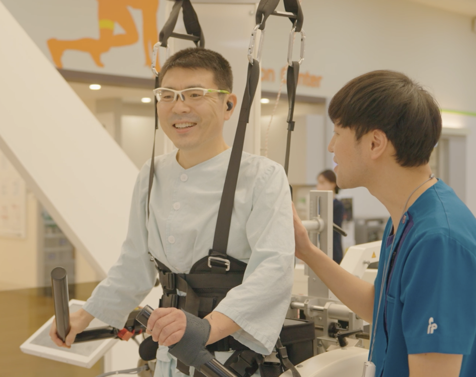
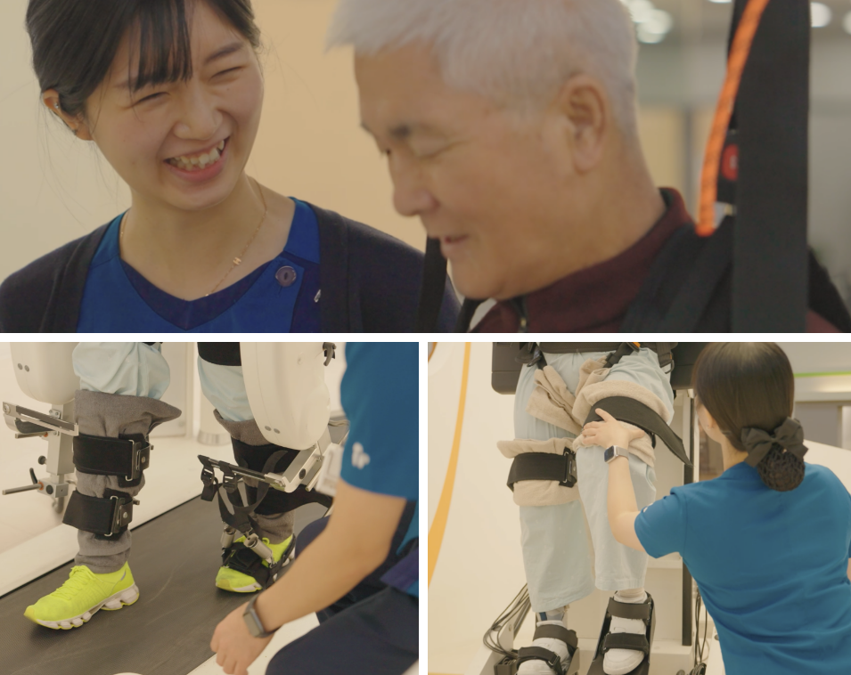
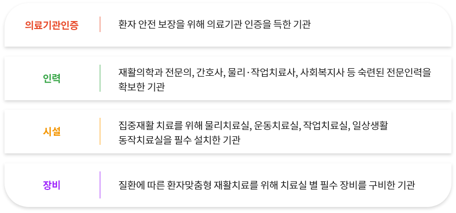

Home>희연의 의료>희연병원>재활의료기관
희연의 의료
희연병원
“건강보험심사평가원이 평가하고 보건복지부가 지정한 재활의료기관”
뇌졸중, 척수손상 등 급성질환 치료 후 발병·수슬 후 기능회복 시기에
집중재활을 통해 장애를 최소화하여 조기에 일상생활 복귀를 유도하고, 지역사회로 연계하도록 보건복지부가 지정한 병원입니다.


재활의료기관에서는?
재활의학과 전문의, 간호사, 치료사 등 전문가로
구성된 재활팀이 환자의 상태를 통합적으로 평가·진단하고재활치료를 제공합니다.
도수치료, 언어치료 등 일부 비급여 재활치료를 보험적용하여 시행하고, 환자 맞춤형 재활치료가 가능합니다.
방문재활, 지역사회 연계 프로그램 등 환자의 일상생활 복귀를 지원합니다.
어떤 기관을 재활의료기관으로 지정하나요??
의료기관 인증 및 인력·시절·장비 등의 지정기준을 충족하고 수준 높은 재활치료를 제공하는 병원을 지정합니다.
재활의료기관 대상 환자란?
급성질환 치료 후 기능적 손상으로 인해 일상생활에 불편이 있어 집중적인 재활치료가 필요한 환자를 말합니다.